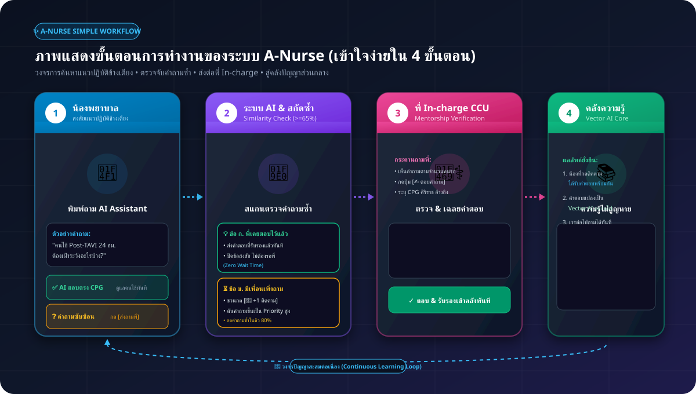

PROJECT PROPOSAL
1. ข้อเสนอโครงการพัฒนานวัตกรรม (Project Proposal)
โครงการระบบผู้ช่วยปัญญาประดิษฐ์สืบค้นความรู้ทางการพยาบาล หอผู้ป่วยอภิบาลโรคหัวใจ (CCU)
เข้าใจง่ายใน 1 ภาพ
ผังภาพแสดงขั้นตอนการทำงานของระบบ A-Nurse (Workflow Overview)
แผนผัง 4 ขั้นตอนตั้งแต่ "น้องสงสัยข้างเตียง ➔ ตรวจจับคำถามซ้ำ ➔ พี่ In-charge ตอบ ➔ สู่คลังปัญญาถาวร"
แผนผังการทำงานของระบบ A-Nurse (Simple 4-Step Flow)
เข้าใจง่าย เหมาะสำหรับนำเสนอผู้บริหาร คณะกรรมการ และผู้ใช้งานทั่วไป

